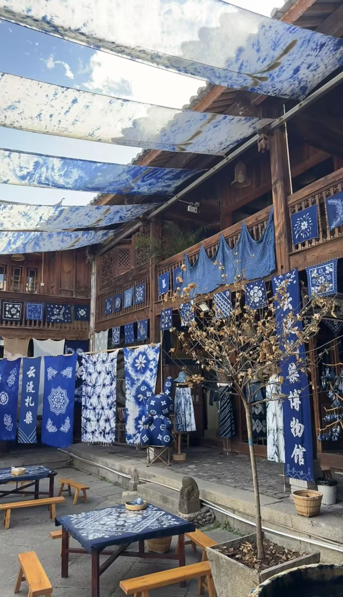
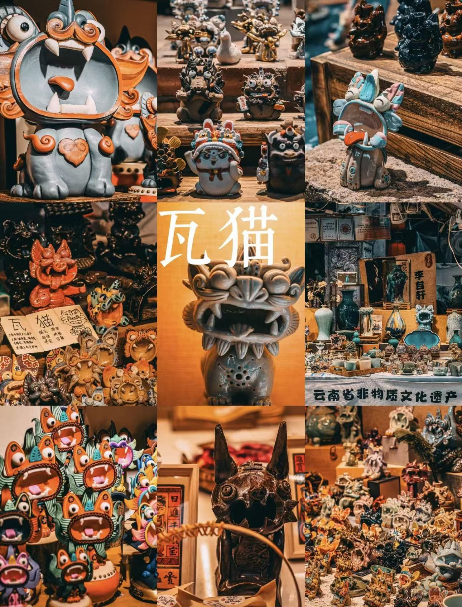
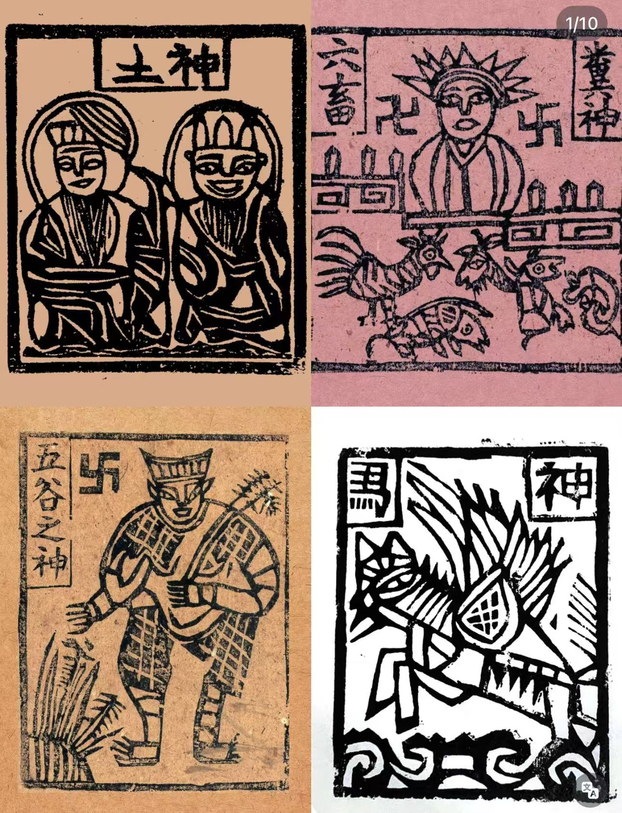

云南非物质文化遗产
指尖上的云南
扎染、瓦猫、甲马拓印——三种历经千年的手工技艺，在云南的山川间代代相传。了解它们的历史与故事，选择你在旅途中想亲身体验的项目。

周城 · 一点蓝扎染
蓝白染布随风飘扬
白族古院落里，层层叠叠的蓝染布铺满天际——这就是周城的日常风景
国家级非遗
扎染
Tie-dye · ZhāRǎn
历史与流传
扎染古称"绞缬"，汉晋时期已有记载，随南诏文化在大理扎根，至今逾千年。大理喜洲镇周城村素有"白族扎染之乡"之称，全村九成以上家庭从事扎染，现有从业人员逾四千人。2006年，白族扎染技艺被列入第一批国家级非物质文化遗产名录。国家级非遗传承人段银开夫妇将古老染坊改建为全国第一家扎染主题博物馆，免费向游客开放。
文化意涵
白族扎染的纹样多取自自然：蝴蝶、梅花、苍山雪、洱海月。每一处留白都是扎绑的痕迹，藏在深蓝里的"冰裂纹"被称为"蓝白之间的呼吸"。所谓"三分染、七分扎"——每一块成品都是独一无二的天然印记。老一辈白族女性认为，送一块自己亲手扎染的布料，是最真诚的情意表达。
体验地点
📍
大理市喜洲镇 · 周城村
白族古村落，苍山脚下洱海之畔。亲手完成扎绑→染色→解线全流程，成品（手帕或围巾）当场带走。早上前往可欣赏染坊晾晒染布的壮观景象。

昆明·大理 · 瓦猫体验馆
屋脊上的守护神兽
张口吞煞、护佑平安——瓦猫立于最高处，已守望云南人家数百年
省级非遗
瓦猫
Roof Cat · WǎMāo
历史与流传
瓦猫造型从虎而来，民间认为它能"食鬼驱邪"，数百年来被安放于云南民居屋脊之上，为一家人看家护院。在昆明，往屋顶放瓦猫的习俗已逾百年。2023年，"昆明瓦猫"被列入云南省第五批省级非物质文化遗产名录。近年随文旅融合兴起，瓦猫从屋顶"跃入"生活，成为冰箱贴、茶具、首饰等200余种文创产品，是云南最受欢迎的伴手礼之一。90后传承人张航创立"心房瓦猫"博物馆，是云南省首家瓦猫专题博物馆。
文化意涵
传统瓦猫必须张嘴，且嘴要足够大——"大口吞天下邪祟"。工匠在捏制时会在猫肚子里放入五谷、五色线，寓意五谷丰登、百事顺遂。每只瓦猫面朝外、背对主人，象征忠心守护。头顶的"王"字点明了它虎的血统。云南人说："有猫在，睡得安。"
体验地点
📍
昆明市 · 蒙化路
专业陶艺老师现场指导，亲手揉泥捏猫，烧制后可快递寄回
🐱
大理市喜洲镇
四代传承人苏龙祥家族工坊，院内陈列数百种不同年代瓦猫藏品，可亲手制作专属瓦猫

大理古城 · 扶摇印记
木版之上的神明世界
土神、灶神、马神……每一块版都封存着千年民间信仰的温度
民俗非遗
甲马拓印
Woodblock Print · JiǎMǎ
历史与流传
甲马起源于军队出征时的祭祀符号，唐宋时期随佛道文化深入云南民间，逐渐演变为木版印刷的神明图像，用于民间祭祀与祈福。大理、鹤庆等地至今保留完整的甲马制作技艺，当地人在春节、清明、婚丧嫁娶等重要节点仍使用甲马。其粗犷的线条与古朴造型被艺术界誉为"中国最质朴的版画艺术"，近年越来越多当代艺术家借甲马图像探索当代表达。
图中四款甲马
照片中可见四块传统甲马拓印：左上为土神（土地公婆，守护田地与家宅）；右上印于粉红纸上的是灶神（掌管一家饮食，腊月廿三送灶）；左下为五谷之神（身着铠甲、手持稻穗，祈愿丰收）；右下是马神（护佑行旅平安）。每一幅线条古拙有力，是民间最质朴的艺术表达。
体验地点
📍
大理古城 · 藏于古城小巷之中
使用传统木版亲手拓印多款神明图案，还可体验在软木上雕刻简单图案，作品当场带走，古朴有禅意
你最想体验哪个项目？
告诉大家你的选择，看看朋友们的投票结果
三项非遗对比一览
| 项目 | 难度 | 耗时 | 成品 | 体验地点 |
|---|
| 扎染 | 低 | 2–3h | 布料当场带走 | 周城村 |
| 瓦猫陶艺 | 中 | 1.5–2h | 烧制后快递 | 昆明·喜洲 |
| 甲马拓印 | 低 | 1–1.5h | 印画当场带走 | 大理古城 |